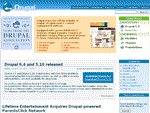

Drupal
Drupal, web tabanlı bir İçerik Yönetim Sistemidir. Drupal ile tek kullanıcılı kişisel sitelerden, çok kullanıcılı topluluk sitelerine kadar her türlü siteyi kolayca yapabilirsiniz. Güçlü tema özellikleri sayesinde sitenizin istediğiniz her köşesinikendi sevdiğiniz şekilde kişiselleştirebilirsiniz.
Drupal'ın esnek kullanıcı izinleri sayesinde sitenizde istediğiniz sayıda kullanıcı rolü tanımlayabilir ve her role istediğiniz izinleri atayabilirsiniz. Böylece siteniz üzerindeki kontrolünüz çok rahat olur. İçerik yönetim sistemi olarak Drupal'ın en güçlü yönlerinden birisi de sınıflandırma kabiliyetidir. Drupal'ın sınıflandırma özellikleri sayesinde içeriğinizi istediğiniz her şekilde kategorilendirebilirsiniz. Drupal, GPL lisansıyla dağıtılan, açık kaynak kodlu bir içerik yönetim platformu*dur. Drupal ve beraberindeki eklentileri kullanarak, kişisel blog sitelerinden şirket sitelerine, içeriği katılımcı kullanıcılar tarafından oluşturulan yeni nesil sosyal ağ sitelerine kadar çok çeşitli amaç ve ihtiyaçlara uygun siteler geliştirmeniz mümkündür.
*Türkçe ve ingilizce kaynaklarda içerik yönetim sistemi (İYS), content management system (CMS), content management framework gibi terimler de kullanılmaktadır.
Geçmiş & Gelecek
Drupal, Dries Buytaert tarafından 2000li yılların başlarında bir forum sistemi olarak geliştirilmeye başlamış ve zaman içinde gelişerek güçlü ve esnek bir içerik yönetim platformu halini almıştır. Dries Buytaert, hala Drupal projesinin başındaki isim olmakla birlikte, geçtiğimiz yıl içinde 7 milyon dolarlık bir risk sermayesi kullanarak Acquia şirketini kurmuştur. Acquia, ticari Drupal hizmetleri sunarak Drupal'in gelişimine destek olmakta ve bir bakıma Drupal'in geleceğini güvene almaktadır.
drupal.org
 Drupal ile ilgili resmi çalışmalar drupal.org sitesi üzerinden yürütülmektedir. drupal.org, 350bin civarı üyeye ve Drupal projesine ev sahipliği yapmasının yanı sıra, sayıları binlerle ifade edilen ve çok çeşitli özellikler sunan Drupal eklentilerini ve temalarını da barındırmaktadır.
Drupal eklentileri, paylaşımı seven Drupal kullanıcıları tarafından geliştirilip karşılıksız olarak Drupal topluluğunun kullanımına sunulmaktadır. drupal.org sitesinde bulunan tüm eklenti ve temalar, Drupal projesinin kendisi gibi GPL lisansına sahiptir. Bu, tüm eklentilerin ücretsiz olarak sunulduğu anlamına gelmektedir.
Rekabet
 Günümüzde birçok internet sitesinin temelinde içerik yönetim sistemleri yer almaktadır. Web tasarımcıları ve yöneticilerinin gösterdikleri yoğun ilgi ve değişken ihtiyaçlar sebebiyle, bu alanda birçok alternatif sistem geliştirilmiştir. Bu sistemlere örnek olarak ülkemizde de oldukça popüler olan açık kaynak kodlu Joomla, MKPortal, PHPNuke sistemlerini ve daha çok blog sitelerinde tercih edilen Wordpress'i gösterebiliriz.
Günümüzde birçok internet sitesinin temelinde içerik yönetim sistemleri yer almaktadır. Web tasarımcıları ve yöneticilerinin gösterdikleri yoğun ilgi ve değişken ihtiyaçlar sebebiyle, bu alanda birçok alternatif sistem geliştirilmiştir. Bu sistemlere örnek olarak ülkemizde de oldukça popüler olan açık kaynak kodlu Joomla, MKPortal, PHPNuke sistemlerini ve daha çok blog sitelerinde tercih edilen Wordpress'i gösterebiliriz.
Drupal, Türkiye'de henüz hak ettiği ilgiyi görememiş olsa da yurt dışında oldukça popüler bir sistemdir. Bu durum, son yıllarda aldığı ödüller ile de açıkça belgelenmiştir. İYS'ler ve diğer konularda kitaplar yayınlayan Packt Publishing, kullanıcıların da katılımıyla her yıl Yılın En İyi İYS'sini seçerek ödüllendirmektedir. 2006 yılında verilen ödüllerde, Drupal Joomla'nın ardından 2.lik ödülü alırken, 2007 yılında ise Joomla'yı geçerek Yılın En İyi İYS ödülüne ulaşmıştır. Bu iki sistem 2008 yılı ödüllerinde de finale kalan 5 aday arasında yer almaktadır.